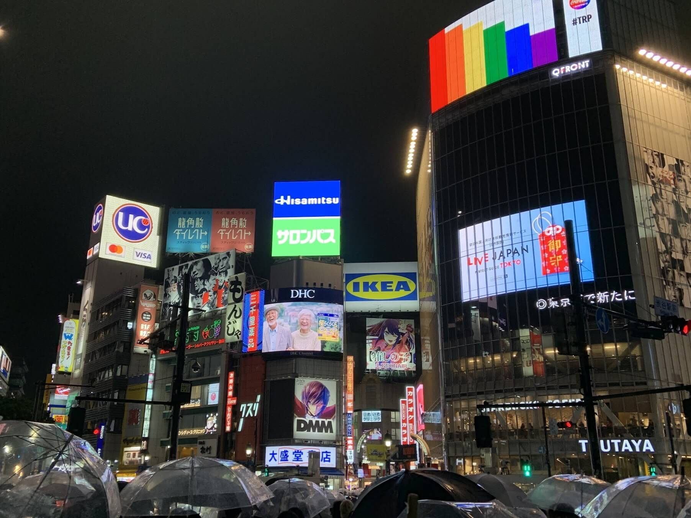

branden's travel blog 🇯🇵/🇰🇷
about page
hi everyone, this project is a meant to be a mini preview of some things that happened during my vacation trip to japan and south korea in 2023!
being inspired by a friend of mine who wrote their own travel blog to asia, i am interested in writing a more detailed trip blog myself! but due to some time constraits we must wait for now... 🚧

shibuya crossing, tokyo
nara park, nara
arashiyama bamboo forest, kyoto
bongeunsa temple, seoul